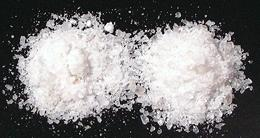

SAFARI
Users
General & History
8000 years ago in Rumania, large scale salt production was already under way. Brine from a salt spring was concentrated into crystal salt by boiling it dry in clay pots. The pots were broken and the salt packaged for a very profitable trade with peoples in regions without a good supply. In China, salt harvesting from a salt lake began around the same time.
A major use of salt from those times was to preserve meat, fish, and later vegetables. While this is no longer necessary in developed regions of the world, the unique flavors produced by salt preservation have kept salted fish, meat and vegetables in high demand.
While the often repeated story that Roman legions were paid in salt is not actually true, it was still a very expensive commodity. Celts in Austria made a good living selling salted meat to Greece and Rome up to the beginning of the Common Era. By the Renaissance transportation and production had improved to the point salt was well on it's way to being the low cost commodity it is today.
Today food grade salt is a rather small market, accounting for less than 5% of production in Europe and North America. The rest goes to Industrial applications. World production is over 240 million tons per year.
Varieties of Salt
There are two basic varieties of food grade salt: Refined Table Salt and Natural Salt, which may be evaporated from seawater or mined from deposits left by vanished lakes, seas and salt flats.
Table Salt
Any convenient salt feed can be used for this process. Sodium Chloride, about 99% pure, is extracted by various processes and all other salts are eliminated. This makes a dry product which works fairly well in salt shakers.
To make it shake even better small amounts of anti-caking substances are
added. A number of these are in use: tricalcium phosphate, calcium or
magnesium carbonates, fatty acid salts (acid salts), magnesium oxide,
silicon dioxide, calcium silicate, sodium aluminosilicate, calcium
aluminosilicate and Sodium ferrocyanide (yellow prussiate of soda).
Iodized Salt:
This is usually Table Salt, but Sea Salt and Mineral Salt are also often iodized by addition of small amounts of Iodine compounds. Dietary iodine is insufficient for health in many inland and mountainous regions, causing swollen thyroid (goiter), stunted growth and severe mental retardation (cretinism). Iodized salt has largely eliminated these problems in North America, but the program is now loosing effectiveness due to various influences (see Salt and Health). Iodized salt also generally contains a very small (0.04%), nutritionally insignificant amount of the sugar dextrose, which stabilizes the potassium iodide to prevent free iodine in the salt.Cook's Illustrated ran comparative tests in their test kitchen using salted popcorn. A few people said they could detect a faint chemical aftertaste from the iodized salt but most said they could detect no difference between iodized and non-iodized.
Sea Salt
Natural Sea Salt is simply what's left when seawater evaporates. It is usually sold as rather large, fluffy looking and somewhat moist crystals. The reason they are moist is that some of the salts other than sodium chloride absorb water from the air. For this reason, natural sea salt is not used in salt shakers at the table, but rather in salt grinders and mills. These are famous for clogging and breaking under the stress of dealing with this stuff. Better to smash it in a mortar and serve it in a salt cellar with a little spoon.
But you have sea salt without these problems? Ha! You've been deceived. Major salt processors refine sea salt to the point it isn't much different from their regular table salt, but since it came from seawater they call it "sea salt" and charge a higher price for it. Real sea salt is slightly bitter and would cake badly if ground fine due to moisture content. It's about 86% Sodium Chloride and the rest is moisture and other mineral salts (analysis in Salt & Health). Some purveyors of sea salt say it is "lower sodium" than regular salt, but you may have to use more for the same saltiness.
Celtic Sea Salt® is a brand name (established 1976) for very strongly marketed natural sea salts in the style of Brittany, France, but sourced from various regions. French Grey Sea Salt (Sel Gris) from Brittany is light grey in color from the clay salt pans it is harvested from. These are the same salt pans Sel de Fleur is harvested from.
An economical place to get natural sea salt is from a Korean market,
because natural sea salt is important to making salt fermented kimchi,
and without kimchi there is no Korean cuisine. The photo specimen is
Korean. Here in Los Angeles it sells for around 2015 US $1.50/pound in
2 pound bags, less in larger bags.
Mined Salt
 This salt is obtained from ancient salt flats, salt lakes and inland seas that have dried up and been buried by normal geologic processes. Straight from the mines it's a natural product, but it's also used as feedstock for salt refining.
Natural mined salt is generally slightly gray in color, though it can
be other colors depending on what geological processes it's gone through
and what minerals were carried through it by groundwater. The photo
specimens are from Russia (left) and Armenia (right). They are ground
coarser than table salt and are slightly gray with a few darker speck
in them. They can be used in salt shakers if the shaker is sturdy enough
to be whacked firmly to break up the clumps every time you use it.
Kosher Salt
There is nothing magic about Kosher salt - it is identical to un-iodized table salt except for crystal size and shape. The crystals are optimized for "koshering" meat - drawing out the blood. It is not itself any more nor any less "kosher" than table salt. Like regular table salt it may contain anti-caking agents such as Sodium ferrocyanide (yellow prussiate of soda).
Celebrity chefs and writers of gourmet recipes now automatically call for kosher salt - its the "in" thing. They imagine the iodine in the salt will ruin the taste of their recipe, though it is highly unlikely to be at all detectable. This is worrisome to health officials, but celebrity chefs aren't concerned about your health, they are concerned about your wallet. If avoiding iodine is the point, non-iodized table salt is just as easily available today.
The one place where kosher salt has a definite advantage is in rubs and the like, where you don't want the crystals to dissolve quickly - and there the low density Diamond Crystal salt has a wide advantage over others. Twice the volume for the same saltiness makes for a more even coating.
It pisses me off that chefs and food writers automatically call for
"kosher salt" without specifying which brand they use. Different volume for
the same saltiness makes it necessary to adjust recipes. Multiply by the
adjustments below when converting table salt to kosher - divide by the
adjustment when converting kosher to table salt. Recipes on Clovegarden are
invariably for regular table salt unless specifically stated
otherwise.
| Salt | Adjust | Anti-Caking Agent |
|---|---|---|
| Morton Plain | 1.00 | Calcium Silicate |
| Morton Kosher | 1.28 | Sodium Ferrocyanide |
| Diamond Crystal | 2.09 | [none] |
Ice Cream Salt
This is table salt in very large crystals, to nearly 1/2 inch long. The object is to dissolve slowly, mixed with ice in an ice cream maker. Since salt water freezes at a much lower temperature than fresh water the saltiness forces the ice to absorb more heat from its surroundings than it normally would, thus making them colder than plain ice would. Yes, it doesn't seem to make sense, but it works. Morton says their ice cream salt is not intended for consumption - it's probably about the same as road salt.
Himalayan Pink Salt
This salt is from a huge salt mine in Pakistan, in the Salt Range, about 190 miles from the Himalayas. It is called "Himalayan" for marketing purposes. Numerous health claims are made for this salt, but none are scientifically supported. Basically, it's Precambrian sea salt (somewhat different composition from current sea salt) contaminated by ground water with minerals, mostly iron and sulphur. It tastes pretty much like salt.
This salt is widely available in North America, from ethnic and upscale
markets, health food stores, and on-line sources. It is sold in many forms,
from large chunks to fine powder. If you buy it ground, you can't tell what
it might be, and it is often faked up in India.
Details and Cooking.
Indian Black Salt
[Kala Namak, Bire noon, Pada loon, Bit lobon, Sanchal (India)]
Mined in volcanic regions, salt with high sulfate content is mixed with charcoal and processed in kilns to reduce the sulphates into sulfites. Black Salt has a strong smell and taste of sulphur, coming from sodium sulfide, iron sulfide, and hydrogen sulfide. It can also be made from regular salt by adding sulphates and heating in kilns with charcoal the same as with the mined salt.
This salt is used as a finishing salt in both North America and India,
but has many other culinary uses, particularly as an ingredient in
Chaat Masala, a seasoning very important to street vendors all through
India, and also in some chutneys
Details & Cooking.
Finishing Salts
Finishing Salts are salts that are sprinkled on food at the time of serving, though they may also be included in rubs and the like. They generally have an unusual texture, unusual color, or both, and may have slight differences in taste. You would not use them for cooking, because the texture, color and taste you are paying for would be totally lost. Various health claims are made, including that they have less sodium than regular table salt, but this is true of any natural sea salt. Few have a flavor much different from that of natural sea salt.
Fleur de Sel[Fleur de Sel (French); Flor de Sal (Portuguese, Spanish, Catalan)]
When salt starts to precipitate in salt pans, nearly all sinks to the
bottom, but some floats as a delicate crust on the surface. When the
weather is just right, it is delicately scraped off and dried in a
way to preserve its fluffy texture. It has the same composition as
natural sea salt, but has more moisture than table or kosher salt,
so it sticks to food better and doesn't draw out so much moisture.
The largest traditional suppliers are France, Portugal, Spain and
Mexico. In France, the salt pans from which Fleur de Sel is
harvested are the same ones that provide the coarser (and less expensive)
Sel Gris.
Maldon Salt
This is a very flaky natural sea salt, and is often called for in
English recipes. It is made in Essex in southeastern England where
salt pans have been in operation for around 2000 years. It is
evaporated over heat, rather than by natural solar evaporation. The
unique texture results from a very precise "drawing" technique,
removal of the salt crystals from the water and final drying.
Cyprus Black Salt
This is Mediterranean sea salt harvested in Cyprus and coated with
activated charcoal made from various natural Mediterranean woods. It is
noted for large, pyramid shaped crystal flakes, but is usually sold in
medium size flakes as in the photo, which is about 1/2 teaspoon of flakes.
Hawaiian Black Salt [Hiwa Kai, Hawaiian Black Volcano Salt, Hawaiian Black Lava Salt]
[Hiwa Kai, Hawaiian Black Volcano Salt, Hawaiian Black Lava Salt]
Despite it's sometimes being called "Black Volcano Salt" and looking
like black volcanic beach sand, this salt has nothing to do with
volcanos. The best grades are made from regular Hawaiian white sea
salt colored with activated charcoal made from coconut shells. Most
is made from partially refined California sea salt colored with
activated charcoal from any source.
Hawaiian Red Alaea Salt
Ancient Hawaiians cut their salt pans into natural red volcanic clay,
and it picked up impurities from that clay. Today the coloring is
done deliberately. For the best grades, Hawaiian white sea salt is
mixed with red clay, and the color comes from iron oxide (rust).
It is a finishing salt that is also much used in rubs for meat.
The photo specimen label states "Hawaiian Style" and lists
ingredients "Sea salt & purified Hawaiian alaea clay", so the
salt may not be of Hawaiian origin. Lower grades are made of
partially refined sea salt combined with a similar, but cheaper,
red clay imported from China.
OthersIndian Black Salt and small crystals of Himalayan Pink Salt are also used as finishing salts. |